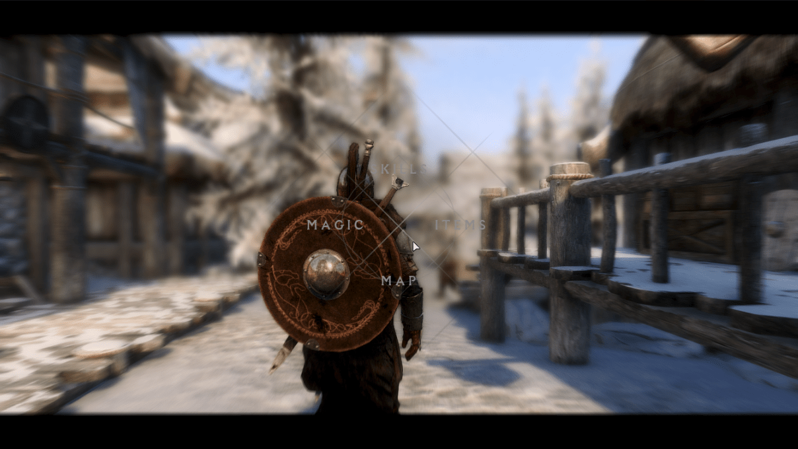

# 簡述
| ID： | aesophor |
| 職業： | 軟體開發工程師 @ Synology Inc. |
| 學歷： | 國立陽明交通大學 資訊科學與工程研究所 碩士 (SQLab) |
| 演講： | HITCON 2022, SITCON 2019 |
| 證照： | CE|H, 多益 950/990 |
# 工作經歷
| Synology Inc. | 軟體開發工程師 (儲存網關組), 2022 年 7 月 - 現今 |
| Synology Inc. | 軟體開發實習生 (網路協定組), 2019 年 7 月 - 2019 年 8 月 |
# 教育背景
| 國立陽明交通大學 | (畢) 資訊科學與工程研究所 (丙組, 實作導向), 2020年 - 2022年 |
| 臺北市立大學 | (畢) 資訊科學系, 2018年 - 2020年 |
| 國防大學管理學院 | (肄) 資訊管理系, 2015年 - 2018年 |
# 專注領域
檔案系統 | 作業系統核心 | 自由桌面環境 | 符號執行 | 自動化軟體漏洞利用
# 演講經驗
| HITCON 2022 | CRAX++: Modular Exploit Generator using Dynamic Symbolic Execution |
| SITCON 2019 | 解放 Linux 桌面！用 Xlib + 樹狀結構打造自己的 Window Manager |
# 著作
# 碩士班週會簡報
- Return-to-csu: Bypassing 64-bit Linux ASLR + pwnable.tw De-ASLR
- Framing Signals: A Return to Portable Shellcode
- Devil is Virtual: Reversing Virtual Inheritance in C++ Binaries
- Symbolic Execution with SymCC
# 個人專案
# valkyrie：一個類 Unix 的作業系統
時間： 2021 年 2 月 - 2021 年 7 月
類型： 個人開源專案、作業
角色： 作者、維護者
技術： C/C++20, Assembly, AArch64 作業系統核心
開源： https://github.com/aesophor/valkyrie
從 Bare-metal programming 開始自幹的類 Unix 玩具作業系統，針對 Raspberry Pi 3b+ (CPU: ARM-Cortex-A53) 撰寫，功能如下：
- 從零自幹簡化版 C++20 標準函式庫 (含 functional, list, smart pointers, 移動語意，完美轉發，concepts)
- 基礎設備驅動 (mini UART, Mailbox, SD Card Driver)
- 基於 mini UART 的簡易 bootloader
- Timer interrupt, system calls
- 基於
fork()+exec()實現 preemptive multi-tasking - 實體記憶體管理：Buddy allocator + SLOB (包含數個 fastbins 與一個 unsorted bin)
- 虛擬記憶體，支援 Copy-on-Write
fork() - 檔案系統：FAT32, /dev, /proc, /tmp
- 虛擬檔案系統 (Virtual Filesystem) 抽象層
- Userland System Software: sh, login, cat, ls, cp, mkdir, mknod, mount, …
# CRAXplusplus：模組化 Exploit 產生器
時間： 2021 年 8 月 - 2022 年 6 月
類型： 碩士論文
角色： 作者、維護者
技術： C/C++17, S2E, pwntools
開源： github.com/SQLab/CRAXplusplus
CRAX 是交大 SQLab 發展的脅迫產生器 (Exploit Generator)，而 CRAX++ 是 SQLab 於 2022 年發表的模組化脅迫（Exploit）產生器，其設計理念是成為一個系統架構清晰、易於擴充、能夠復現實驗、且能於將來整合多篇 AEG 研究的半自動脅迫產生框架。
# wmderland: 使用空間分割樹的 X11 平鋪式視窗管理器
時間： 2018 年 12 月 - 現今
類型： 個人開源專案
角色： 作者、維護者
技術： C/C++14, Xlib
開源： github.com/aesophor/wmderland
使用空間分割樹的 X11 平鋪式視窗管理器，可理解成簡化版的 i3wm。截至 2022 年 9 月 7 日，已在 Github 上獲得了 382 顆星。
- Configurable workflow (keyboard, mouse, or both)
- i3-like config; easy to use!
- 9 Workspaces (static)
- Fullscreen toggle
- Floating toggle
- Gaps & borders
- Window focus follows mouse
- Smart floating
- Supports a subset of EWMH
- Tiny IPC Client
# vigilante：獨立製作的 2D 像素風 RPG
時間： 2019 年 4 月 - 現今
類型： 個人開源專案
角色： 作者、維護者
技術： C/C++17, cocos2d-x, box2d
開源： github.com/aesophor/vigilante
使用 C++17 與 cocos2d-x 獨立設計、撰寫的像素風的 2D 遊戲，類似惡魔城，但玩家能夠招募 NPC 作為隊友。此遊戲包含完整的戰鬥、裝備、任務、交易、組隊系統，可惜因為課業、工作繁忙，一直沒時間將劇情、音樂完善。
# 開源貢獻
- S2E/s2e: 寫了一個 unconditional state fork（類似 VM snapshot 的功能）、重構跟解 bug。
- google/glog – 寫了一個 LogCleaner，讓 glog 內建自動刪舊 logs 的功能。發 PR 修些微小的安全性問題。
# 娛樂
# 遊戲
- CS:GO: 玩休閒模式居多，偶爾才打競技 / 排位 (ID:
eku⚡️hy24853623)，平常會開自己寫的外掛。 - Skyrim SE: 一款讓我從高一玩到大學、碩士班、甚至出社會還在玩的遊戲。目前正在 M1 Pro MacBook Pro 上使用正版 CrossOver 22.1 進行遊玩，安裝了將近 200 個 mods，同時使用了一個自行修改的 ENB Preset。
 |
 |
# 素描

# 硬筆字書法